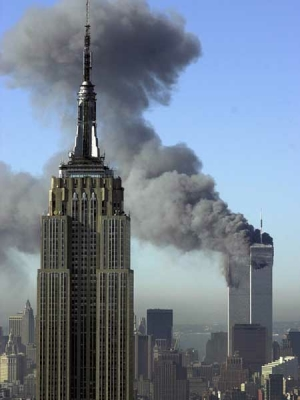
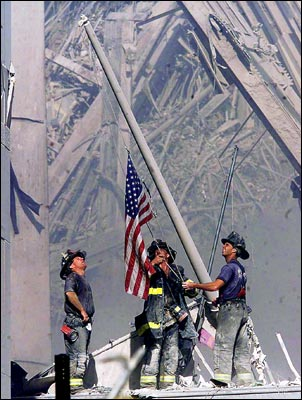

2001 Schedule/Results

Week: 1 2.1 3 4 5 6 7 8 9 10 11 12 13 14 15 2.2 16 17
| Weekly/Yearly Honors | |
|---|---|
| * | |
| * | Most points in a game (year) |
| * | Fewest points in a game (year) |
| * | Most lopsided victory (year) |
| Week 1 NFL Schedule |
|||
|---|---|---|---|
| Purple Helmeted Soldiers of Love | 38 | Da'renegades** | 68 |
| Discount Merkins | 22 | Got Sheep? | 23 |
| Die Fussabstreifer | 31 | Enlightened Rogues | 33 |
| Beer 'n Broads | 33 | Thundering Curd | 22 |
| Ball Busters | 26 | Itchy Tortugas | 40 |
|
September 11 No scoop today. For some reason the status monkey lost his sense of humor. Maybe it'll show up tomorrow. Maybe not.  September 13 Da'renegades whip out the rusty scissors and emasculate the Purple Helmeted Soldiers of Love 68-38. The rampaging rebels get three touchdown passes from a Saint-ly pick and two touchdowns plus 157 rushing yards from their number two back to run away with the contest. The mauve micromeat sport the same receiver problems as last year when a starter hits the snooze bar one too many times and sleeps through the game, and the remaining members of the team appear to play in a pseudo-slumber anyway. Da'renegades look to be da'beast of da'east while the Helmets look to put their unofficial league record for consecutive winless games well out of anyone else's reach. Got Sheep? sneak by Discount Merkins by the wooly hair of their chinny chin chins 23-22. The euphoric ewes see their receivers shut down, but two rushing touchdowns (one from the quarterback) and a decent kicking performance prove to be enough to outfox their lowly opponents. The cheap chumps get totally blanked in the rushing AND receiving areas, but still end up losing only when the kicker misses a 65-yarder wide left on Monday night. The Sheep pick up winning right where they left off last year while the Discounts owner manages to change his team name but not the quality of players drafted for the second year in a row - like Shakespeare said, a pile of crap by any other name would still smell as bad. The Enlightened Rogues stage a furious Monday night rally to welcome Die Fussabstreifer to the league with a 33-31 defeat. The wizened wanderers get nil from their number one pick and running backs to trail 31-12 after Sunday, but a chuckin' Bronco tallies 330 yards and three touchdowns to eke out the win. The welcome mats get welcomed with no points from their running backs as well, but 185 receiving yards and three touchdowns combined from both receivers keep things close until the very end. The Rogues are just happy they don't suck so far this year while Die Fuss feel a draft upstairs after getting buzzed by a Barber Monday night. Beer 'n Broads pour cheap malt liquor into the milk and spoil the Thundering Curd's welcome back party 33-22. The boozing dudes get nada from their overhyped receivers, but two touchdowns plus 113 rushing yards from a charging rookie prove to be almost enough single-handedly. The cheesy poofs also get zippo from their receivers, one of whom spends all day Sunday is his street clothes looking for the Lambeau Silverdome, and the running backs on the team pitch a shutout too. B'nB reap the benefits of actually having seven players play (unlike last year) while the Curd look to be in for a long season when their defense is the team's second highest scorer. The Itchy Tortugas don steal-tipped cleats and drop-kick the Ball Busters through the uprights 40-26. The itchmeisters get two touchdowns and 135 rushing yards from their first pick and two more touchdowns from a reloaded Packer gun to put the game away. The cracked nuts avoid a complete rout by getting a surprising two touchdowns from the mighty Miami offense Sunday night, but only the quarterback and kicker manage to register any other points. The Torts keep their fingers crossed hoping for a worst-to-first season while the Busters look to make at least 14 transactions over the next couple of weeks. |
|||
{kind=link}
| Purple Helmeted Soldiers of Love | - | Got Sheep? | - |
| Da'renegades | - | Die Fussabstreifer | - |
| Discount Merkins | - | Ball Busters | - |
| Beer 'n Broads | - | Itchy Tortugas | - |
| Thundering Curd | - | Enlightened Rogues | - |
|
September 13 Week 2 games will NOT be played September 16-17 because the NFL has "decided that our priorities for this weekend are to pause, grieve, and reflect."  September 18 The NFL's competition committee has voted unanimously to keep the 16-game format, switching the games called off last weekend to the weekend of January 6-7. |
|||
{kind=link}
| Week 3 NFL Schedule |
|||
|---|---|---|---|
| Purple Helmeted Soldiers of Love | 32 | Beer 'n Broads* | 65 |
| Da'renegades | 27 | Discount Merkins | 30 |
| Got Sheep? | 16 | Die Fussabstreifer | 15 |
| Thundering Curd | 60 | Ball Busters | 24 |
| Itchy Tortugas | 46 | Enlightened Rogues | 30 |
|
Beer 'n Broads keep the kegs a rollin' with a 65-32 decapitation of the Purple Helmeted Soldiers of Love. The Coors chuggers get three touchdowns, 321 passing yards plus a two-point conversion from their Ram-tough quarterback and three touchdowns plus 146 receiving yards from their number one receiver to put the game away early. The sad sacks get 16 points from their biggest Rod, but a measly six points from their number one pick dooms them to yet another unpleasant <PUN>beating</PUN>. B'nB now sport the highest octane offense in the league while the Purples see their winless streak reach 14 and wonder why everyone wants to put up 60+ points on them. Discount Merkins take advantage of a serious power outage to upset Da'renegades 30-27. Da'merks see both running backs leave for a hospital party early in the first half, but three touchdowns from the quarterback and 12 points from the kicker prove to be just what the doctor ordered. The rebel rousers pin their hopes on a matinée showing of the classic opera Fiedler on the Roof, and he does manage to trip across the goal line a couple of times, but no points from the receiving game and a paltry three points from the league's top draft choice leads to the inevitable defeat. The Discounts are just happy to have their heads above, or at least even with, water while Da'gades can't believe they rely so heavily on a quarterback named Brooks. Got Sheep? enjoy their second one-point victory in as many weeks as they eke by Die Fussabstreifer 16-15 in the inaugural I Can't Believe I Wasted $50 On A Ticket To Watch This Crap Bowl. The slumbering sheep get six points from a running back and ten from their kicker and - well, that's it. Der Creampuffs get nine points from their quarterback and three each from a receiver and kicker and - well, that's it. The Sheep sport the universe's most pathetic offense as the kicker leads the team in scoring but don't care because they're still 2-0 while Die Fuss are living the "close but no cigar" dream after being outscored by a grand total of three points in their two losses. After the "game" (and I use the term loosely) the other eight owners did vote unanimously to not have a second I Can't Believe I Wasted $50 On A Ticket To Watch This Crap Bowl. The Thundering Curd break out the five-wood and slice the Ball Busters into the trees 60-24. The curdled ones ride the arm of the Mann to the tune of four touchdowns and 300+ passing yards - IN THE FIRST HALF ALONE - and that is more than enough to single-handedly bust some balls. For the second week in a row the odoriferous orbs have less than half their starters turn in any point-worthy performances. The Curd get to the .500 mark for the first time since dinosaurs roamed the Earth (basically when the owner was born) while the Busters wonder why they wasted a first-round pick on the premiere running back of a team that can't even score a single touchdown. The Itchy Tortugas hold a Monday night rally to knock off the Enlightened Rogues 46-30. The backscratchers get one touchdown and 100+ rushing yards from each running back but still trail 30-22 after Sunday's action, but wrap things up with four touchdowns from a Pack of troublemakers. The retarded roamers see both noggins of their two-headed Vikings receiving monster lopped off in the Windy City, and only a 20-point performance from Little Bob keeps things close for as long as they did. The Itchies are just feeling tingly all over as one of the three remaining undefeated teams while the Rogues feel the sting of taking receivers from the same team with two out of the top three picks. |
|||
| Week 4 NFL Schedule |
|||
|---|---|---|---|
| Purple Helmeted Soldiers of Love | 23 | Itchy Tortugas* | 52 |
| Da'renegades | 32 | Enlightened Rogues | 22 |
| Discount Merkins | 37 | Beer 'n Broads | 49 |
| Got Sheep? | 30 | Thundering Curd | 47 |
| Die Fussabstreifer | 34 | Ball Busters | 18 |
|
The Itchy Tortugas replace the Viagra with a placebo and run away from the <PUN>limp</PUN>-img Purple Helmeted Soldiers of Love 52-23. The talcless tacos get 23 points from their Favre-orite quarterback and another touchdown reception from a man called Bubba to Pack away the big victory. The nimrods only get points from their quarterback and kicker and resume their march towards the title of official Kiss of Death when they lose their number two running back for the year. The Torts think they look impressive in amassing victories against teams that are a combined 1-8 this year while the Soldiers remain the league's favorite punching bag by being on the receiving end of the most points scored in a week every week so far. Da'renegades circle the wagons and win the shootout against the attacking Enlightened Rogues 32-22. The apathetic arsonists watch in horror as the town Marshall lights up their favorite NFL team to the tune of 160 total yards and three touchdowns, but relish the resulting 18 points. The moronic marauders blow-off turning in a lineup, overlooking the fact that last week's starters also lost, and end up getting no more than six points out of anybody. Da'renegades enjoy the victory but still suffer nightmares at the sight of squished fish bits all over the St. Louis turf while Da'rogues suffer the same nightmares AND have to cope with a two-game losing streak. Beer 'n Broads liquor up the Discount Merkins and take advantage of them 49-37. The monstrous Miller-chuggers see most of the starters show up in a hungover state, but the quarterback and rookie running back bail out the team by combining for seven touchdowns and six performance points. The blue-light specials register their best offensive output of the season in a losing effort, thanks mainly to three touchdowns from their Eagle-eyed quarterback. B'nB remain undefeated but have to wonder about team depth when the other five starters combine for one lousy point this week while the Merkins restake their claim to the league's official Kiss of Death by having four running backs in the infirmary and cutting a quarterback as he sat idly on the bench, bye George. The Thundering Curd use a stanky cheese grater to sheer Got Sheep? bald 47-30. The yodeling yogurt enjoy a group orgy in the end zone as every player (except the defense and kicker, of course) scores at least one touchdown. The cowardly cotton-bags get four touchdowns from their quarterback and six PATs from their kicker and that's all, as everyone else sneaks off to a good ol' fashioned country hoedown to down a ho. The Curd savor a winning record for the first time since Noah sailed the seven seas in his ark while the Sheep see their seven-game winning streak dating back to last year get flushed down the proverbial toilet. In an international battle of doormats the German team, represented by Die Fussabstreifer, wipe out the American team, represented by the Ball Busters, 34-18. Die Finallywonone get two touchdowns from their quarterback and one touchdown apiece from two running backs never heard of before to put the game on ice. Der Suckenbigtime only manage to get one two-point conversion out of the five starters playing Sunday afternoon and never really seem to recover. Die Fuss finally get to enjoy a Monday Night Football game and are overjoyed to earn the newest franchise's first victory (although the joy is tempered by the fact of who they had to get it from) while the Balls pray that their two scavenged running backs come somehow salvage their pitiful season. |
|||
| Week 5 NFL Schedule |
|||
|---|---|---|---|
| Purple Helmeted Soldiers of Love* | 49 | Da'renegades | 22 |
| Discount Merkins | 42 | Die Fussabstreifer | 8 |
| Got Sheep? | 20 | Itchy Tortugas | 27 |
| Beer 'n Broads | 42 | Thundering Curd | 31 |
| Ball Busters | 47 | Enlightened Rogues | 34 |
|
The status monkey offers his sincere apologies for the lateness of this week's scoop, but he ended up unconscious for several hours as the result of his head bouncing off the keyboard after finding out that the Soldiers actually won a game... The Purple Helmeted Soldiers of Love brush the dust and cobwebs off the pile driver and ream Da'renegades 49-22. The purple people beaters get two touchdowns and 332 passing yards from their quarterback and one touchdown and three performance points each from their top running back and receiver to get the pounding underway early. The bumbling bandits look like a team out of place as their quarterback, a receiver, and a running back get blanked and the league's overall first pick only manages six. Da'soldiers experience a sensation rarely felt before (no, not that, although now that the owner is married...) as they enjoy their first victory since September 18, 2000 while Da'renegades can enjoy their spot in trivia history as being the bookends of the league's longest winless streak ever, 15. Discount Merkins enjoy a pseudo-bye week with a 42-8 demolition of Die Fussabstreifer. The sale seekers start a running back in street clothes and a receiver belonging to a quarterback that throws for 87 yards per game, but 12 points from their quarterback and 15 from their top receiver are both more than enough to erase the opposition. Der Backdowntoearth head off on vacation early and avoid sending in their lineup, but it doesn't make any difference whatsoever as the starters AND reserves only combine for 20 points anyway. The Discounts pull themselves into a three-way tie for first place - thanks to the other two teams losing - while Die Fuss manage to break their own record for futility by lowering the mark for fewest points scored in a game another seven points. The Itchy Tortugas unleash a flea infestation upon Got Sheep? 27-20. The tremendous tortillas are forced to go without one of the league's top picks and as a result their only highlight is two touchdowns and 135 rushing yards from their number two back, but that's enough against their offenseless opponents. The miserable mutton suffer power outages all over the place as their quarterback, both running backs and a receiver get shut out, and the score wouldn't have even been as close as it is save for their defense scoring a touchdown. The Itches are proud to have matched last year's win total after only four weeks while the Sheep are understandably not scoring many points when they don't even know what NFL teams some of their players play for - Johnson hasn't been in Minnesota for three years, Horn has never been in Seattle - but at least they get to enjoy a 6-0 lead over the Ball Busters for two weeks. Beer 'n Broads take advantage of some lousy coaching on the opposition's behalf to spoil the Thundering Curd 42-31. The wining women wanters trail 25-24 going into Monday night but get the usual three touchdowns from their Warnerful quarterback to turn the match into a rout. The pungent Parmesan pull a pair of major front-office boners when they bench Wheatley and his 12 points in favor of a not-so-great Dayne who gets broken in the first half AND they start a running back who was broken last week and was last seen floating around the Gulf of Mexico on a Buccaneer ship for the next 3-4 weeks. B'nB remain undefeated with by far and away the league's best offense while the Curd bitch-slap themselves silly as they gaze wantonly at the 12 points sitting on the bench and the 11-point defeat. The Ball Busters use some big words and some big offense to stupefy the Enlightened Rogues 47-34. After displaying the worst offense over the first three weeks, the bulbous behemoths finally get the lead out and come up only five receiving yards short of having every starter - including their defense - score at least three points. The stammering ramblers get one touchdown and 155 rushing yards from the third-string Denver back and 12 points from their kicker, and that's usually enough against the Busters but just not today. The Balls finally register in the win column and their owner wonders what she can spend the $4 on that she "saved" this week while the Rogues at least don't have to worry about second-guessing themselves because they left only 2 points on the bench. |
|||
| Week 6 NFL Schedule |
|||
|---|---|---|---|
| Purple Helmeted Soldiers of Love | 38 | Die Fussabstreifer | 16 |
| Da'renegades | 32 | Thundering Curd | 28 |
| Discount Merkins | 41 | Got Sheep? | 21 |
| Beer 'n Broads | 31 | Enlightened Rogues | 32 |
| Ball Busters* | 56 | Itchy Tortugas | 48 |
|
The Purple Helmeted Soldiers of Love wipe their stained combat boots all over Die Fussabstreifer 38-16. The rolling stones get two rushing and one passing touchdown from their unDaunted quarterback and 147 rushing yards and one touchdown from a Texas-ex to put the game out of reach early. Der Fadingfast finally get a touchdown from their number one pick, but only one other player joins in the team's end zone celebration and the result is another poor offensive showing. Only 20 games into the franchise's storied history and the Purples finally get to enjoy their first winning streak longer than one game while Die Fuss are starting to live up to their namesake as they take over sole possession of worst record in the league and have to start asking themselves if Elvis has truly left the building. Da'renegades chow down on baked beans and cut the cheese all over the Thundering Curd 32-28. The Frito banditos suffer a major scare when the league's overall first pick leaves the game without scoring a point, but two touchdowns from their quarterback and 11 points out of their drug-head kicker bail the rest of the team out. For the second week in a row the quivering cream pull off a coaching boo-boo when the owner benches Dunn because he thinks he's still broken, when in fact he registers two touchdowns while the back that the owner starts in his place can only muster three points. Da'renegades win their second game in a row but are going to be without most of their running game next week while the Curd waste yet another $4 that they could have saved if only they'd read the I-R report. The Discount Merkins leave skid marks all over the wool with a 41-21 dismantling of Got Sheep? The bargain basements can start only one working, albeit awful, running back, but three touchdowns and 183 receiving yards from their Terrell that isn't busted and two touchdowns from Mr. Greenballs prove more than enough for the overmatched mutton. The lame lambs get one touchdown and 140 rushing yards from their Marshall Dillon, but the team's fate is etched in stone when their quarterback throws for a whole lotta nothing. The Merkins enjoy a winning record for the first time since Caesar was showing Cleopatra his asp while the Sheep's three-game losing streak puts them below .500 for the first time since their very first game, back in Week 1 of 1999. The Enlightened Rogues crash the party and bust Beer 'n Broads 32-31. The wandering wisemen get nada out of their running game and even more nada out of their number one pick, but the defense's return of an errant Manning pass for a touchdown saves the day - barely. The Meister Brau moochers see their Ram-tough quarterback and receiver combine for a measly three points yet still only trail by two going into Monday night, but their fate was sealed way back on Friday when the owner opted to play the kicker of a team who had only scored 25 points all year and he comes through with a stunning single point. The Rogues pat themselves on the back as their upset allows the '72 Dolphins to once again raise a champagne toast to undefeatedness while the lone member of the Broads' fan club is starting to worry now that the team's owner is displaying some of the same stupid decision-making as last year. The Ball Busters put a little extra grease in the pan and up the Itchy Tortugas 56-48. The Busters get four touchdowns and 332 passing yards from their quarterback and one touchdown apiece from their backfield full o' Smiths, but it's the unheard-of nine points scored in overtime that put them over the top. The Torts get five touchdowns combined from a receiver named Bubba and a quarterback that talks like a Bubba, and the game isn't over until their number one pick doesn't manage to find the end zone Sunday night. The Busters become the first team in recorded history to bench their number one pick - and move to 2-0 since his demotion - while the Torts are frustrated after scoring the second-most points on the week and still falling from the realm of the undefeated, but at least they can brag about their big Bubba's touchdown-to-catch ratio of two catches and two scores - another awesome pick by the perennial football wizard! |
|||
| Week 7 NFL Schedule |
|||
|---|---|---|---|
| Purple Helmeted Soldiers of Love | 20 | Enlightened Rogues | 14 |
| Da'renegades* | 33 | Beer 'n Broads | 21 |
| Discount Merkins | 19 | Thundering Curd | 27 |
| Got Sheep? | 28 | Ball Busters | 28 |
| Die Fussabstreifer | 4 | Itchy Tortugas | 30 |
|
The Purple Helmeted Soldiers of Love club the Enlightened Rogues over the head 20-14. The sheathed shooters get two touchdowns and 255 all-purpose yards from their all-purpose quarterback and six points out of the kicking game to seal the deal. The bumbling buffoons get one touchdown each out of their quarterback and number two receiver, but throw the game away when their kicker only manages to tally two points. The Soldiers remain an up and coming team (which can get quite messy at times) as they have now won more games in the last three weeks than they did in their first 18 games while the Enlightened Rogues gain sole possession of last place in the West thanks to their hired gun Scary Terry leaving the game early with a bum ankle at a whopping cost of 67 cents per carry.
Da'renegades snatch Beer 'n Broads secret stash of Bud Light and
inflatable women 33-21. The rebel rousers steal out to a 7-0
lead two weeks ago, then run out to their local
The Thundering Curd unveil the lethal Limburger and stink the Discount Merkins out of the stadium 27-19. The curdling scream get a touchdown rushing and passing plus 143 rushing yards from the express Bus, but for the third week in a row the owner skips over the league's I-R report to get to the comics quicker and ends up starting a receiver in street clothes. Fortunately for him his team plays the cheap chumps, who reclaim the league's official seal as Kiss of Death when Biakamawakafoochaka gets canned for the year after scoring nine points and Chrebet goes to bed and bumps his head and couldn't get up in the morning. Both the Curd and Merks sit at .500 and have serious problems with the I-R report, one because he can't read it and the other because every running back on his team is a charter member. In what has got to be the longest and most boring game in league history, Got Sheep? and the Ball Busters duel to a 28-28 tie. It all starts three Sundays ago when the Sheep's quarterback scores a single freakin' touchdown - 6-0. Yawn. It picks up again last Thursday when the Buster's quarterback answers with his own single freakin' touchdown, at which point a Sheep receiver hauls in one of his own - 12-6. YAWN. Sunday sees one more single freakin' touchdown for both sides and a whole lotta kickin' - 28-28. YAWN!!! By the time Monday arrives, attendance dwindles to zero, the Sheep's defense doesn't score, and the game is finally put out of everyone's misery. If a tie is like kissing your sister, then in this case your sister has a moustache, hairy back, and a pair of 20-pound balls slapping against her thighs when she walks. 'Nuff said. The Itchy Tortugas unleash the Pack air attack upon Die Fussabstreifer 30-4. The brave burritos get an unusually poor showing out of their running game, but yet another Bubba-to-Bubba connection is more than enough when playing America's most wanted opponent. Der Stinkingupthejoint's owner takes Friday off and misses out on the fact that their new acquisition, Fairy Glenn, chips a nail in Thursday's practice and skips the weekend's activities altogether, and then watches in horror as Elvis does leave the building - on a stretcher. The Itches end up with first place in the West all by themselves but have to start worrying about Bubba's production, which plummets to one touchdown every two catches, while Die Fuss once again manage to break their own record for futility by lowering the mark for fewest points scored in a game another four points as they sit alone in the East's cellar. |
|||
| Week 8 NFL Schedule |
|||||||||
|---|---|---|---|---|---|---|---|---|---|
| Purple Helmeted Soldiers of Love | 30 | Got Sheep? | 44 | ||||||
| Da'renegades | 35 | Discount Merkins | 7 | ||||||
| Die Fussabstreifer | 20 | Enlightened Rogues | 30 | ||||||
| Beer 'n Broads | 35 | Itchy Tortugas | 42 | ||||||
| Thundering Curd | 25 | Ball Busters* | 45 | ||||||
|
Got Sheep? rise from their knees to blow the Purple Helmeted Soldiers of Love off the field 44-30. The rowdy rams enjoy breakout days from their number two receiver, who scores his first two touchdowns of the year, and from their number one running back, who nets three touchdowns and 184 rushing yards as he finds more gaping holes in the Detroit defense than in the women in Bill Clinton's little black book. The pulsating peters leave a running back with three touchdowns and 129 rushing yards on the bench in favor of two losers who get shutout, and when both quarterbacks on the bench score way more than the starter they <PUN>come up</PUN><PUN>a bit short</PUN> on points. The Sheep breathe a little easier as they get back to .500 after a short vacation while the Purple Loves fear they may be returning to their former ways of <PUN>getting beaten</PUN> on a regular basis as their three-game winning streak gets snapped. Da'renegades roll back prices and roll over the Discount Merkins 35-7. The runaway rebels see both receivers get their hands tied behind their backs but still manage to have three players score more than their entire opponent's squad combined, including a third quarter outburst of three touchdowns from their struggling quarterback and another touchdown plus 107 receiving yards from their rental Ram running back. The coupon clippers just plain squat on the sidelines and squirt a rotten goose egg when they play the wrong Eagle and everyone gets shutout except their mighty kicker. Da'renegades maintain their lofty position alone in first place in the East although they won't get to play either their original or loaner St. Louis back next week while the Discounts need to scour the colleges to find running backs that are young enough to avoid those nasty year-long injuries. In the battle of owners who don't like to waste time turning in lineups (a.k.a. division dungeon-dwellers) the Enlightened Rogues out bore-to-death Die Fussabstreifer 30-20. The roaming retardos start an old geezer who is confined to the nursing home for the week and have their twin-Viking receiving corps amass a combined one catch for -2 yards in the first half, but somehow four touchdowns is enough to knock off their opponent. Der Playersjumpingoffdaship start Fairy and his continuing tale of pain and suffering (he was fined $4,000 for not working out on Wednesday 'cause his tummy hurt) and see all three of their quarterbacks avoid taking any snaps whatsoever, so only their kicker and number one receiver put up any points at all. Both teams remain in last place in their respective divisions and both look back on 10/16 as the day they wasted $2 on patsies (well, one current Patsy and one former Patsy to be specific). The Itchy Tortugas declare prohibition and outlaw the Beer 'n Broads 42-35 in a matchup between West division titans. The super supreme tacos enter the game without a pecker, er Packer, amongst them but still overcome a 15-5 Thursday deficit to emerge victorious as a man named Brady from New Wengland fills in nicely and one of their receivers passes for a touchdown. The drunken dykes finally turn in a lineup on time but it ain't a very good one as both running backs get banged up and shut down and their top-ranked quarterback only finds the end zone once late in the game. The Tortugas jump out to a two game lead in the division and get all their Bubbas back next week while B'nB see their losing streak hit three and start to wonder why someone, mimicking an infamous scene from American Pie, spoiled their beer. The Ball Busters climb aboard the A-Train to derail the Thundering Curd 45-25. The Busters overcome a 14-6 Thursday deficit when every player, including their defense in overtime, puts points on the board, with highlights provided by their brand new Bear rookie who rumbles down the track for 127 rushing yards, one touchdown, and a two-point conversion. The stanky Swiss' owner proves he literally is a cheesehead when he sets a new standard for lineup ineptitude by:
|
|||||||||
| Week 9 NFL Schedule |
|||
|---|---|---|---|
| Purple Helmeted Soldiers of Love* | 51 | Discount Merkins | 35 |
| Da'renegades | 36 | Die Fussabstreifer | 29 |
| Got Sheep? | 19 | Itchy Tortugas | 24 |
| Beer 'n Broads | 48 | Ball Busters | 37 |
| Thundering Curd | 21 | Enlightened Rogues | 34 |
|
The Purple Helmeted Soldiers of Love use good penetration to sack the Discount Merkins 51-35. The jumbo Johnsons find themselves without their starting quarterback when he waves bye for the week, but both running backs find the end zone once and the substitute quarterback has a five-touchdown field day (three for the offense, two for the defense) against the lowly Cowpukes to pull out the win. The murky jerks put all their eggs in one basket and the national birds lay duds when both running backs score diddly and the quarterback only gets two touchdowns. The Helmets get back to .500 but face an impending quarterback controversy as the team is much more comfortable with the replacement than the league's second-overall pick, as evidenced by the week's most points, while the Merkins benching of big Tony and his two touchdowns in favor of that all-Eagle backfield has many of their fans inquiring about Die Fussabstreifer season tickets. Da'renegades need a little extra ammo to shoot down Die Fussabstreifer 36-29. The tricky tramps get 16 points out of their running game and that's it for Sunday as they trail 29-16, but their number two receiver leaves big Brown skid marks on the doormats Monday night to the tune of 12 points and their ecstasy-snorting kicker boots through another eight to eke out the win. Der Cantstandtowatchmondaynightfootball put up their most points in a looooong time thanks in part to two touchdowns from a Couch potato and a Hail Mary that was Bearly caught, yet still manage to find a way to choke that lucky 13-point lead away. Da'renegades bump their lead in the East up a half-game to two while Die Fuss are starting to realize that they are in deep doo-doo since they don't get to play the Ball Busters again this year. The Itchy Tortugas escape a close shave with Got Sheep? 24-19. The toxic tortillas get one touchdown from their Talking Bubba doll and none from their receivers, but their prayer for victory is answered by a Priest who rushes for one touchdown and 181 yards, which is one more yard than the Bubba can throw for, incidentally. The raucous rams display a bad case of intestinal fortitude as they stink up the sheep's pen with one Sunday point from six-sevenths of the team to trail 24-1, and only three Monday night touchdowns from the quarterback with the Gannon-like arm make the game as close as it appears. The Itches maintain a two game lead in the West but should consider upgrading their defense since there are plenty of free agents out there who have scored way more than theirs while the Sheep are looking forward to beating up on their own division again as they fall to a pathetic 0-3-1 against teams from the West. Beer 'n Broads rise from their praying position in front of the porcelain god to sneak past the Ball Busters 48-37. The skanks that drank throw out a lineup without their regular quarterback or number two receiver thanks to byes, but their replacements come through admirably with five touchdowns, including a career day of two TDs by land and two TDs by air out of a quarterback who had only five touchdowns all year long prior to the day's action. The broken balls get three touchdowns out of their hobbled quarterback but their only real memorable highlight is when their defense runs an interception back for a touchdown in overtime for the second week in a row. B'nB stop the puking, er bleeding, after losing three in a row while the Busters need to consider looking elsewhere for offense when their most consistent scoring threat still seems to be their defense. The Enlightened Rogues use a blistering Monday night display to liquefy the Thundering Curd 34-21. The bogus rogues get a surprising two touchdowns out of the substitutes for their Viking receiving crew yet still trail 21-18 after Sunday's action, but they save the best for last as their quarterback and two running backs combine for 16 points. For the fifth week in a row the bumbling turd botch the lineup, this time starting five different players from last week - including one receiver that's on sabbatical in a Detroit hospital for the rest of the year and another with a wittle ankle boo-boo that just won't go away - and when both running backs are shutout the team's fate is sealed. The Enlighteneds use the Curd's face to step out of last place in the West and have now wiped their feet on two doormats in two weeks while the league's competition committee considers whether to enforce an annual literacy test to guarantee that all owners are equally capable of reading an I-R report. |
|||
| Week 10 NFL Schedule |
|||
|---|---|---|---|
| Purple Helmeted Soldiers of Love | 25 | Die Fussabstreifer | 35 |
| Da'renegades | 48 | Got Sheep? | 42 |
| Discount Merkins* | 62 | Ball Busters | 45 |
| Beer 'n Broads | 40 | Enlightened Rogues | 33 |
| Thundering Curd | 36 | Itchy Tortugas | 46 |
|
The new phone books are in! The new phone books are in! Wait... Die Fussabstreifer wins! Die Fussabstreifer wins! That's right, Die Fussabstreifer whip out the box cutters and Bobbitize the Purple Helmeted Soldiers of Love 35-25. Der Beatenthepenispurple put on a well balanced, but certainly unexceptional, display as everybody except the defense scores and nobody scores more than eight. The swollen members suffer major shrinkage as only their quarterback and kicker stay erect long enough to register any decent point totals. Die Fussabstreifer snap their five-game losing streak and, more importantly, don't soil the living room couch as they finally hold on to a lead going into Monday night while the Love Soldiers remain in second place in the East with a sub-.500 record but may soon need binoculars to see the front-runners. Da'renegades slip on the chaps and spurs and ride Got Sheep? into the ground 48-42. The rowdy rebels welcome back the league's overall first pick who graciously racks up 183 rushing yards and two touchdowns, and his return seems to remove a huge burden from their struggling quarterback's shoulders as he responds with 347 passing yards and two touchdowns of his own. The horrible haggis get three sets o' dozen out of their quarterback, Horny receiver, and kicker but unfortunately their intestines end up as stuffed as both their Brown running back and receiver named Brown. Da'renegades look to be on cruise control in the East with a five-game winning streak and the luxury of kickin'-A even though they leave two awesome rushing performances (266 yards/3 TDs, 145 yards/1 TD) on the bench while the Sheep are seen cowering in the corner of the pen with their legs tightly crossed as an angry owner approaches. The Discount Merkins kick in the turbo and beat the Ball Busters over the finish line 62-45 in the first running of the biannual Commissioner 500. The for sale signs get highlight reel footage from their two Philly fliers to the sum total of 223 passing yards, 183 rushing yards, 85 receiving yards and five touchdowns, all acquired at the expense of the sieve-like Viking defense. The nutcrackers also get a four-touchdown day out of their quarterback, but their Bostonion receiver is the only other useful player to make an appearance with nine points. The Discounts snap their three-game losing streak but not in time to avoid forcing one of their waiver wire receivers into retirement while the Balls owner is wondering what she ever did to piss off the other commish to the point where he would average over 77 points per game against her over the last two "contests." Beer 'n Broads use an exquisite mixture of malt liquor and turpentine to get the Enlightened Rogues stupidly drunk 40-33. The Schlitz 'n sluts savor 174 receiving yards and three touchdowns from Marvin not-the Martian and a touchdown on both ends of a Ram-to-Ram pass, but fortunately that's about all that is needed in this case. The stumbling stooges finally get one touchdown each from their double-headed Viking receiving monster, but when one running back returns to his rightful spot on the bench and the other is stuffed by the "mighty" Seattle defense, all hope is lost. B'nB keep pace with the Torts in the West and field the league's most virile offense while the Rogues collapse under the pressure of having to play a team with a winning record. The Itchy Tortugas use an oversized grater to turn the Thundering Curd into cheese bits 46-36. The itchies and scratchies elect to start the wrong quarterback as Talking Bubba throws for twice as many yards and touchdowns (and even rushes for twice as much negative yardage) but a man named Curtis carries the load almost all by himself with 113 rushing yards and three touchdowns. The fondue dips hire a seeing-eye dog to read the owner the I-R report and he finally fields a team of seven, but unfortunately the quarterback with his three touchdowns is the only player who really plays. The Tortugas maintain the league's best record but face life on the edge without the Edge while the Curd remain all alone in the dank, dark dungeon that is last place in the West. |
|||
| Week 11 NFL Schedule |
|||
|---|---|---|---|
| Purple Helmeted Soldiers of Love | 50 | Ball Busters* | 53 |
| Da'renegades | 40 | Itchy Tortugas | 36 |
| Discount Merkins | 19 | Enlightened Rogues | 12 |
| Got Sheep? | 36 | Beer 'n Broads | 40 |
| Die Fussabstreifer | 19 | Thundering Curd | 26 |
|
The Ball Busters hold off a late rally and bust the Purple Helmeted Soldiers of Love 53-50. As is getting to be the norm for the bulbous balls this year, only three players show up to play but all three register big days, with the quarterback (23 points) and kicker (18 points) leading the way. The sizeable shafts get one touchdown from three different players Sunday to trail 53-26 going into Monday night, but four touchdowns from their number one pick isn't enough to claim the W as their Toomer gets irradiated on prime time TV. The Balls appear to have conceded that this is a rebuilding year when they bench their first and third-round picks (and their 0 points) in favor of two rookies (and their 0 points) while the Purple Helmets become the second team this year to score the second-most points for the week and still lose to the Busters, although a 21-point serving of fried Rice could have satisfied their appetite for victory. Da'renegades emerge unscathed 40-36 from this year's showing of the Clash of the Titans rerun with the Itchy Tortugas. The daring deserters get three touchdowns from their rejuvenated quarterback and 153 yards and one touchdown from the league's overall first pick to escape with a marginal victory. The bogus burritos only manage to keep the game close by having the week's most effective weapon, their defense, run an interception back for a touchdown in the closing minutes of each half. Da'renegades triumph pulls them even with the Torts for the league's best record and keeps them perfect (4-0) against the West while the Itches lose their first game to an Eastern division opponent and have to start wondering if playing an arsenal full of Packers is really all it's cracked up to be as their receivers combine for two catches for 45 yards and one touchdown. For the second year in a row the Discount Merkins lull the Enlightened Rogues to sleep, this time by the score of 19-12, in the "battle" between the league's two oldest franchises (a.k.a. Geriatric Bowl II). The cheap clods assume "the" position when their rookie running back is arrested in the locker room just prior to kickoff for firing up a doobie, and the rest of the team seems overcome by the fumes as they only manage to find the end zone twice through the haze. The stupefied scamps appear to be stoned on much stronger "medication" as their quarterback throws for 114 yards, their running backs rush for 31 and 19 yards, their receivers catch for 46 and 17 yards, and their kicker kicks nothing except the opening kickoff. The Merkins two-game winning streak gets them back to .500 and back into the thick of the wildcard race while the entire Enlighteneds squad was last seen pounding their heads on the wall in unison after their owner benches the team's number one pick and his 22 points. In the battle of division lushes Beer 'n Broads outdrink Got Sheep? 40-36. The Pabst pounders get a Warnerful 401 passing yards and three touchdowns out of their number one pick but only one touchdown from everyone else, and fortunately that's enough in this case. The euthanated ewes answer with a big day of their own from their quarterback - 311 passing yards and four touchdowns - but nobody else finds the end zone at all and their two running backs combine for a pitiful 38 rushing yards. B'nB pull to within one game of first in the West and should probably continue attending those AA meetings on a weekly basis as they appear to help immensely while the Sheep own the league's longest current losing streak and look like the only time they will see next year's plaque is when they smile at themselves in the mirror. The Thundering Curd finds the cure for what ails them - a healthy dose of Die Fussabstreifer - and walk away with a 26-19 victory. The meek Mozzarella are forced to take to the air when the Bus runs for only 52 yards and the great Dayne runs backwards for -3, and the aerial assault pays off as their quarterback and both receivers get one touchdown apiece. Der Cantseemtowintwoinarow see their most feared weapon boot 10 points through the uprights, and everyone else pretty much takes the weekend off to sightsee around their respective stadiums. The two teams are the only ones to not change their lineups from last week and should perhaps pay closer attention, as the Curd leave a team-record 436 passing yards and three touchdowns on the bench in favor of a Man with a broken jaw and one touchdown while Die Fuss just plain guess wrong as Elvis (two touchdowns) has reentered the building and is now sitting on the Couch (zero touchdowns). |
|||
| Week 12 NFL Schedule |
|||
|---|---|---|---|
| Purple Helmeted Soldiers of Love | 27 | Thundering Curd | 22 |
| Da'renegades* | 36 | Ball Busters | 24 |
| Discount Merkins | 28 | Itchy Tortugas | 32 |
| Got Sheep? | 33 | Enlightened Rogues | 25 |
| Die Fussabstreifer | 30 | Beer 'n Broads | 18 |
|
The Purple Helmeted Soldiers of Love swipe the Thundering Curd's only crutch and use it to whack them upside the head 27-22. The purple peter pullers get absolutely zero from their number one pick, Mr. Culpooper, and only six points from their top three picks combined, but the scum they scrape off the Indy injury pile runs for 104 yards and two touchdowns and that proves to be enough to win the game. The moldy Monterey Jack-offs see their running game shut down and get only three points from their receivers, and when their number one pick hurls four interceptions against only one touchdown their doom is inevitable. The Purples get back into second place in the East but need the Hubble telescope to see the front-running Da'renegades while the Curd are starting to emit a powerful odor as they get stuck in the back of the refrigerator, er division. Da'renegades don't need no stinkin' badges to arrest the Ball Busters 36-24. The bashful bandits get a trio of decent Sunday performances to put the game away early, highlighted by 117 receiving yards and two touchdowns from an old Brownie who now plays with the Girl Scouts in Oakland. Da'busters only manage a pair of decent performances after having the wind knocked out of their sails when the A-Train is left idling in the depot after being downgraded from 100% healthy to doubtful one hour after Wednesday's lineup deadline. Da'renegades extend their winning streak to seven and clinch at least a tie for the Eastern crown thanks to playing in a division with four losers (a.k.a. sub-.500 teams) while the Busters experience the Colt-syndrome firsthand as they sport a decent offense but can't seem to keep anyone out of the end zone, giving up over 42 points per game. The Itchy Tortugas place the Discount Merkins on closeout with a 32-28 drubbing. The berserk burritos blow off submitting a lineup and play a Jet spending a bye week in the hangar, but Garrison don't-put-me-in-the-Hearst-just-yet rips off 106 rushing yards and two touchdowns and that's about all that is needed against a "team" the caliber of the Merks. The penny savers lay another pair of Eagle eggs, uh goose eggs, when their quarterback throws for a whopping 92 yards and their number two running back runs for a whopping 50 yards, and only their kicker manages to break into double digits. The Tortugas clinch the first playoff spot and look to be in pretty good shape as they get to face the three worst teams over the next three weeks while the Discounts remain in second place, a distant four games out with only four games to play, and bear the distinction of being the only team from the East to lose this week. Got Sheep? bust down the pen and stampede over the Enlightened Rogues 33-25. The wooly welterweights get nil from their running game and only six points from their receivers, but 221 passing yards and three touchdowns from Gannon the Cannon is enough to fire past the Rogues. The impotent imps get nada from their receivers and only six points from the Griese spot on their collar, but you know a lot of offense isn't in store when the mighty Olindo leads the way with 10 points. The Sheep snap their three-game losing streak and somehow manage to sneak within a half-game of the final wildcard spot while the Rogues now own the league's longest current losing streak and might want to consider benching their second and third-round picks as well. Die Fussabstreifer shake up the Schafer and spray it all over Beer 'n Broads 30-18. Der GettingtolikeMondaynights get an amazing two 100-yard performances plus one touchdown out of their running game, but it's the one touchdown from their coke-snorting receiver that gives the team something to party, er rally, around. Suds 'n duds have their running game shut down as usual and trail 24-12 going into Monday night, and when their mighty Ram passing game only nets six points they are left to face Tuesday morning with a wicked hangover. Die Fuss win their second game in three weeks although their motives have to be questioned (beating colored penises and drunk women) while B'nB have a firm grip on the lead in the wildcard race but have to wonder about Warner after yet another poor outing. |
|||
| Week 13 NFL Schedule |
|||
|---|---|---|---|
| Purple Helmeted Soldiers of Love | 24 | Discount Merkins | 29 |
| Da'renegades* | 67 | Thundering Curd | 46 |
| Got Sheep? | 42 | Die Fussabstreifer | 31 |
| Beer 'n Broads | 48 | Ball Busters | 40 |
| Itchy Tortugas* | 59 | Enlightened Rogues | 9 |
|
In a battle of gridiron behemoths, uh teams trying to salvage their pathetic little seasons by earning the lowest possible wildcard seed, the Discount Merkins lop off the Purple Helmeted Soldiers of Love 29-24. The wee women wigs race out to an 18-0 Thursday lead thanks to three Philly touchdowns and then manage to hold on despite scoring only one subsequent touchdown. The flaccid foreskins are psyched-up for the contest until their number one receiver gets lost in the Rockies and misses the game and their quarterback leaves the game early to tour some local steel mills, and only 15 points out of their kicker keeps the score as close as it is. The Merkins now claim sole possession of the final wildcard spot although there's a herd of sheep breathing down their necks (that must stink to high heaven!) while the Love Soldiers need to get four full quarters out of all seven starters if they want to make any legitimate run at the postseason. Da'renegades put a serious hurtin' on the Thundering Curd with a 67-46 whoopin'. The rampaging rebels leave no aerial weapon unfired as the league's overall first pick catches three touchdowns and 128 yards through the air (remember, he's a running back) and their quarterback throws three touchdowns and 330 yards through the air and old man Brown catches two touchdowns through the air. The cheese dips put on a decent offensive showing, putting up 40+ for the first time since IBM had a real retirement plan as everyone scores - including their defense - except for the running back who's Dunn in Tampa Bay. Da'renegades become the first team to clinch their division as they maintain a four game lead in the East with three to play while the Thunders continue to position themselves for next year's coveted eleventh pick. Got Sheep? leave hoof mark shaped manure stains all over Die Fussabstreifer 42-31. The mighty mutton suffer yet another shutout of their two worthless Browns but overcome adversity when their geezer quarterback throws for three touchdowns and 302 yards and their Horny receiver adds 10 points of his own. Der Stickaforkinem are forced to start their number one pick in place of their usual starter and he comes through with a touchdown - his second of the season - but their defense scores as many touchdowns as any other player and that pretty much wraps up the L. The Sheep remain a half-game out of the final wildcard spot but their wool is standing on end as they face the league's hottest team next week while the other nine owners wonder what all Die Fuss is about as the doormats live up to their moniker and become the first team eliminated from the playoff picture. Beer 'n Broads party like it's 1999 after outscoring the Ball Busters in a 48-40 slugfest. The mighty Michelob moochers get only a smattering of touchdowns here and there until their first rounder puts up 342 passing yards and four touchdowns while torching Atlanta far worse than Sherman ever did. The defensiveless duds get three touchdowns from their receivers and two more from their quarterback, but their inability to score on the ground or stop anything at all while their defense is on the field costs them yet another game. B'nB still have a firm grip on the first wildcard spot although their eyes are set on the West division title while the Balls really need to focus on team defense so that their offense can have a fighting chance, as the only teams who have scored more than the Busters have a combined 28-8 record. The rich get richer and the poor get poorer as the wealthy Itchy Tortugas beat up on the bankrupt Enlightened Rogues 59-9. The breakfast burritos race out to a 25-9 lead Sunday and never look back, pouring even more gas on the fire when their two Bubba dolls combine for five touchdowns and four performance points Monday night. The dumbfounded dungeon denizens set a new standard for futility when only their quarterback scores any touchdowns - one - as the rest of the team was seen milling around 6th Street Sunday while attending Suckfest 2001, figuring Austin must have put it on in their honor. The Itches thoroughly enjoy pushing the Rogues off the cliff with the year's most lopsided victory to date while the Enlighteneds are running out of running backs, with three no-timers and three part-timers who rush for a combined 92 yards this week, which translates to an astounding 15 yards per back. |
|||
| Week 14 NFL Schedule |
|||
|---|---|---|---|
| Purple Helmeted Soldiers of Love | 42 | Beer 'n Broads | 18 |
| Da'renegades* | 46 | Got Sheep? | 42 |
| Discount Merkins | 29 | Die Fussabstreifer | 19 |
| Thundering Curd | 5 | Itchy Tortugas | 38 |
| Ball Busters | 27 | Enlightened Rogues | 11 |
|
The Purple Helmeted Soldiers of Love erectify their season with a 42-18 pounding of Beer 'n Broads. The mighty mushroomheads are forced to start scary Kerry when their number one pick rests his sore knee, but 12 points apiece out of their kicker and something named Antowain put the game well out of reach. The cruddy Corona suffer through major delirium tremors ("DT's" to you alkies) when only the quarterback manages to find the end zone and the kicker plays with a bum back, significantly reducing his scoring range. The Purples remain one game out of the final wildcard spot but better hope that enough folks are healthy to have any kind of chance while Bn'B look to be trying desperately to back themselves out of a playoff spot as they share the "Kurt Warner plus any six schmucks will win" delusion dreamed up by the Ball Busters last year. Da'renegades neuter Got Sheep? 46-42 in the first (and more than likely last) I've Got A Receiver Named Tim Brown Who Can Return A Punt For A Touchdown Bowl. The defiant defectors serve up a well-balanced meal as everyone except the defense scores and nobody scores more than 12, with the main highlight provided by their number one receiver who scores his first touchdown of the year. The retreating rams respond with a well-balanced serving of their own, but when one of their running backs is left looking like a Brownie floating in the toilet bowl as the lone starter on the team to be blanked the scale tilts in their opponent's favor. Da'renegades win their ninth straight and look to garner home field advantage throughout the playoffs while the Sheep hang on to the last playoff spot by the skin of their nasty smelling yellow teeth as they fall a game and a half out with but two to play. The Discount Merkins hang Die Fussabstreifer over a clothes line and beat them with a wire broom 29-19. The tang toupees aren't very impressive but impressiveness is not usually needed against Da'doormats, as their quarterback connects for two touchdowns, one of their running backs catches a TD of his own, and TD gets three performance points in his return to the starting lineup. Der Wantthateleventhpick are stuck with one option at quarterback but it isn't much of an option as he gets outfoxed in Foxboro and puts zero on the board, so Jimmy and his 119 receiving yards and one touchdown prove to be almost half the offense despite him playing after his first cocaine offense. The Discounts look to have the inside track to the last wildcard spot with a one game lead and an encounter with one of the West's doormats next week while Die Fuss continue to build their case for the all-important first pick in the second round of next year's draft. The Itchy Tortugas continue their march through the stagnant swamp of league losers with a 38-5 thrashing of the Thundering Curd. The electrifying enchiladas seem to have luck (and prayer) on their side as the league Priest rushes for 168 yards and a touchdown and receives for 109 yards and a touchdown, and when their defense scores and their running back throws a touchdown the Curd realize that the big guy upstairs is not on their side this day. The cheese cutters have both running backs and receivers shut down Sunday and trail by a mere 33 going into Monday night, and then their golden boy lays a big ol' goose egg in front of a national audience to seal the deal. The Torts lay claim to the West division title thanks to Beer 'n Broads latest defeat but need to realize that they will actually have to play teams with winning records in the playoffs while the Curd take their rightful spot on the couch to enjoy the postseason from the warm confines of their own home. The Ball Busters take advantage of their bye week to bump their victory total with a 27-11 win over the unarmed Enlightened Rogues. The busters o' balls have lots of people score but unfortunately most are riding the pine, and it's only when their number one pick finally registers his first touchdown and 100+ yard rushing game of the year that the game swings in their favor. That familiar stench of death hovering over the league ain't from Oprah's last bathroom visit, but rather the mischief makers festering in the desert sun as all running backs and receivers get blindfolded and their quarterback only musters one measly touchdown before departing with a cracked coconut. The Busters maintain a glimmer of hope in the playoff hunt although they'll have to face two playoff contenders in the last two weeks while the Rouges can start preparing the eulogy for their season as they are eliminated from the playoffs, although they would have stunk much less had they stuck with their number one draft pick and his average of 122 receiving yards and 1 1/4 TDs since being benched four weeks ago. |
|||
| Week 15 NFL Schedule |
|||
|---|---|---|---|
| Purple Helmeted Soldiers of Love | 31 | Enlightened Rogues* | 0 |
| Da'renegades | 33 | Beer 'n Broads* | 56 |
| Discount Merkins | 29 | Thundering Curd | 35 |
| Got Sheep? | 34 | Ball Busters | 27 |
| Die Fussabstreifer | 27 | Itchy Tortugas | 35 |
|
The Purple Helmeted Soldiers of Love blow their load all over the Enlightened Rogues 31-0 in Quarterbackless Bowl 2001. The stifling sausage gamble on Culpepper who poops out before kickoff but the Edge's replacement runs for 177 yards and two touchdowns which is more than enough - heck, an extra point is more than enough - to wrap up the W. The scoreless scoundrels skip turning in a lineup yet again and play a busted Bronco quarterback, and the end result is a Hall of Shame effort in futility when the starters "rack up" 166 total yards and earn only the second shutout in league history. The Helmets two-game winning streak keeps them alive for a wildcard spot although they'll have to rear-end some sheep next week to get in while the Rogues wonder where their fearless owner went, as some intelligence reports say he has taken refuge in the cave systems outside Georgetown to avoid the weekly assaults inflicted upon his team. Beer 'n Broads come out in the preferred position - on top - 56-33 over Da'renegades in a Monday night scoring orgy. The Lone Star lushes only manage 11 points over the weekend as most of the starters generally stink up the joint, but explode Monday night thanks to three Ram-to-Ram aerial connections that generate 12 points apiece. The loose cannons score even less - 9 points - over the weekend and their Monday night explosion is far more contained as their quarterback and number one running back combine for four touchdowns. B'nB claim the top wildcard spot and get to try and prove themselves again next week against the other division leader while Da'renegades see their nine-game winning streak snapped and have to hope that the team that beat them wins next week too so that they can regain home field advantage throughout the playoffs. The Thundering Curd use a hedge trimmer to give the Discount Merkins a 35-29 buzz cut. The fat-free yogurt fly through the air to Peyton's place with 325 yards and three touchdowns and also get 14 points from a pair of peckers, uh Packers, to squeeze out the victory. The putrid pubic pelts go nowhere on the ground, but the two touchdowns from their quarterback and 11 points from their kicker keeps them in the game longer than they rightfully deserve. The couch-bound Curd improve to 2-0 against the Discounts but are 3-9 against everyone else while the Merkins fall back down to Earth at .500 and try to play themselves out of the playoff picture for yet another time in their storied past, although they somehow manage to still control their own destiny. Got Sheep? ride rough-shod over the Ball Busters 34-27. The mountin' sheep get two rushing touchdowns out of a bungling Bengal yet still trail 27-18 going into Monday night, but one receiving touchdown and 10 kicking points are enough to overcome adversity. The marble mashers ride the A-Train for 173 rushing yards and a touchdown and their number one pick for another 111 rushing yards, but the rest of the team makes like Amtrak and gets derailed far short of the station. The Sheep maintain a glimmer of postseason hope although they'll need help from the team they just beat to get in while the Balls bid adieu to their shot at an unprecedented fifth consecutive playoff appearance. The Itchy Tortugas take candy from a baby with a 35-27 defeat of the Die Fussabstreifer. Chips and salsa score a victory thanks to two touchdowns from a man named Brett and 121 rushing yards and one touchdown from a man named Priest. Der Guaranteedworstteam get zippo on the ground and it's only when Elvis enters the building with three touchdowns do they even manage to reach a double-digit point total. The Itches have now outscored their opponents by almost 200 points and have secured a position in the Hall of Fame with the league's most improvement of a team, although that shouldn't be too surprising since they REALLY sucked last year, while Die Fuss lock up the first pick in the second round of next year's draft as they account for half of the Enlightened Rogues' - the league's second-worst team - victory total. |
|||
NFL Schedule |
|||||||||||||||||
|---|---|---|---|---|---|---|---|---|---|---|---|---|---|---|---|---|---|
| Purple Helmeted Soldiers of Love | 38 | Got Sheep? | 35 | ||||||||||||||
| Da'renegades* | 46 | Die Fussabstreifer | 28 | ||||||||||||||
| Discount Merkins | 9 | Ball Busters | 9 | ||||||||||||||
| Beer 'n Broads | 44 | Itchy Tortugas | 38 | ||||||||||||||
| Thundering Curd | 18 | Enlightened Rogues | 7 | ||||||||||||||
|
No scoop this week. The status monkey's Christmas present to y'all - no abuse for a week. However, here's a sneak peak at Santa's list:
The Discount Merkins get the "very naughty" nod since their owner was too busy Friday duffing around some golf course to turn in a lineup, thereby playing two starters on their bye week when a win would have put the team in the playoffs. The Ball Busters get the "very nice" nod since their (yawn) tie with the undermanned Discount Merkins put the Purple Helmeted Soldiers of Love in the playoffs. So Merry Christmas to all, and to Da'renegades, Itchy Tortugas, Beer 'n Broads and Purple Helmeted Soldiers of Love - who coincidentally had the top four picks in the draft, so it's not like they need any more Christmas presents - a good night... |
|||||||||||||||||
(Playoff Semifinals) NFL Schedule |
|||
|---|---|---|---|
| Da'renegades* | 44 | Purple Helmeted Soldiers of Love | 37 |
| Itchy Tortugas | 18 | Beer 'n Broads | 36 |
|
Da'renegades dunk the Purple Helmeted Soldiers of Love in ice cold water and take advantage of the resulting shrinkage with a 44-37 victory. The tremendous turncoats see the league's overall first pick run for 118 yards and three touchdowns and even catch a fourth, and it's a darn good thing too as the rest of the team plays like they're in a preseason scrimmage rather than the playoffs. The severed salamis savor three touchdowns out of their Christmas Eve acquisition, but the man of Steel isn't strong enough to overcome the poor performances of everyone else all by himself. Da'renegades move on to their first ATM Bowl but have to be wary of team effort when one person accounts for over 61% of their offense while the Soldiers head home to hone their draft skills, as almost 65% of their offense came from players they didn't draft. Beer 'n Broads slip the Itchy Tortugas a knarly mickey and stumble away from the table with a 36-18 win. Boozies 'n floozies enjoy 359 passing yards and three touchdowns from their first pick to single-handedly pick up the W, and then tack on 125 rushing yards and one touchdown from a Mack truck leased out of Jacksonville. The nasty nachos smell like salsa left out in the sun for a year or two when their aerial attack doesn't bother to make an appearance, as their quarterback and one receiver seem to have their butts frozen to the tundra and the Missile flies way off target. B'nB are drunk with excitement as they make their way to their first ATM Bowl but are in even worse shape than their upcoming opponent as they, too, have a single starter account for over 61% of their offense and they lose a back to a bye, while the Torts have yet another season's hopes dashed on the rocks as they bump their playoff record to a pitiful 1-4. |
|||
(ATM Bowl XII) NFL Schedule |
|||
|---|---|---|---|
| Da'renegades | 27 | Beer 'n Broads* | 39 |
|
Beer 'n Broads roll out the barrel - their beer or their broad, it's hard to tell since they have the same shape - and roll over Da'renegades 39-27. The stupendous stouts take to the air with three passing touchdowns from their number one pick and two receiving touchdowns plus 128 yards from their number two pick, and that's about all there is as their number three pick catches a measly 5 yards and their running backs "rush" (more like fall forward) for a combined 85 yards. The retreating rebels respond with a ground attack that includes one touchdown and 100+ yards from each running back, but their aerial assault is nonexistent as their quarterback drowns in the Brooks, their veteran receiver leaves big Brown skid marks on his underwear and the scoreboard, and their rookie receiver misses the target completely because the gun's Chambers were empty. B'nB easily dispose of both 12-3 teams en route to the franchise's first championship thanks to their All-AFFL quarterback and receiver duo while Da'renegades need to rethink their draft strategy as they wind up with two All-AFFL running backs but an invisible passing game. And now a few awards to close out the season, all chosen unanimously by a 1-0 vote from the league's panel of expert:
Most Valuable Player: Kurt Warner, Beer 'n Broads
Coach of the Year: Frank Marullo, Itchy Tortugas
Best Late-Round Draft Pick: Bubba Franks, Itchy Tortugas
Worst First-Round Pick: Fred Taylor, Discount Merkins
Ultimate Kiss of Death Award: Brad Fraley, Discount Merkins
Cheapskate of the Year: Vince Brunssen, Got Sheep?
Oversight of the Year Award: Stephanie Blaschke, Ball Busters
Where Are They Now? Award: Marty Ridgeway, Enlightened Rogues |
|||
Home Top